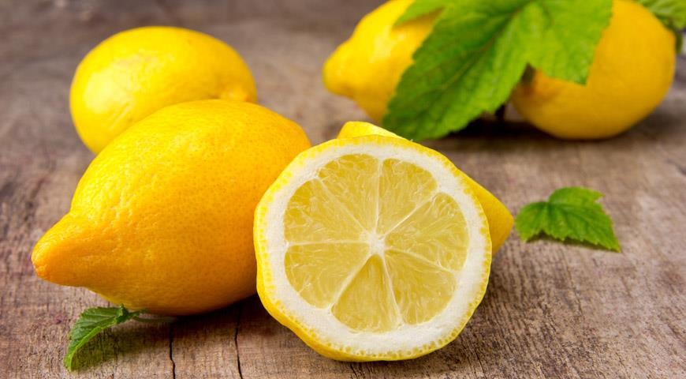

12 propiedades útiles y curativas del limón.
La fruta con propiedades sorprendentes es conocida en todo el mundo. Sus cualidades útiles han sido utilizadas por las personas durante muchos siglos. Durante mucho tiempo, esta fruta cítrica aromática es un componente de cosméticos y perfumes. El limón es rico en energía solar, su olor y sabor son factores curativos que las personas aceptan como un regalo de la naturaleza ... Antes de interesarme por una nutrición adecuada, usaba limón solo como complemento de los platos de pescado y, a veces, dejaba caer una rebanada en una taza de té. Pero cuanto más me sumergía en los problemas de una alimentación saludable, más formas descubrí el limón por mí mismo. A continuación, hemos recopilado 12 propiedades útiles de limón que lo ayudarán a mejorar su salud. 1. El limón como fuente de electrolitos. El limón es rico en electrolitos como el potasio, el magnesio, el sodio y el calcio, y muchas personas ni siquiera saben que esta combinación te permite crear tu propia bebida deportiva perfecta. En lugar de gastar dinero en bebidas que contienen mucha azúcar, puede hacer una bebida mucho más saludable (y hacerlo por menos) en casa. Aquí está una de las posibles recetas: Agregue 40 ml de jugo de limón en 1 litro de agua, agregue 3 cucharadas de miel y un cuarto de cucharada de sal. A la salida tomamos una bebida para 4-5 porciones. 2. El limón como potenciador de la inmunidad. Si se siente enfermo, pruebe un vaso de agua tibia con jugo de limón y miel para fortalecer su inmunidad. Un limón contiene aproximadamente el 50% de la ingesta diaria total de vitamina C. Junto con minerales como calcio, hierro, magnesio, fósforo, cobre, que también se encuentran en el limón, obtenemos un potenciador de la inmunidad natural. 3. Limón como remedio para las náuseas y el mareo. El mareo por movimiento no es lo más placentero, especialmente cuando ocurre mientras viaja o se relaja. Si no hay medicamentos a la mano y no hay una farmacia cerca, intente sostener una rodaja de limón en la boca. Esto te ayudará a sentirte mejor. Los limones son una excelente manera de combatir las náuseas. 4. Limón como un anti-pohmelin natural A veces las situaciones ocurren en la vida cuando por la mañana lamentamos haber bebido demasiadas bebidas fuertes ayer. Si de repente esto te sucedió, debes saber que un limón te ayudará. El limón no solo lucha contra las náuseas y suministra electrolitos al cuerpo (que se perdieron durante la fiesta), sino que también ayuda a eliminar las toxinas del hígado. Exprime el limón en el agua y bebe esta composición. 5. El limón como remedio para la hinchazón. La hinchazón puede tener varias causas. Pero al igual que la cinetosis, esta dolencia se nos acerca en el momento más inoportuno. Si se despertó por la mañana y siente molestias en el abdomen, tome una bebida preparada de acuerdo con una receta especial. Tome 4-5 rodajas de pepino, rodajas de medio limón, un cuarto de naranja, unas hojas de menta y sumérjalas en una jarra de litro con agua fría (preferiblemente con hielo). Eso debería ayudar.
Buy now!